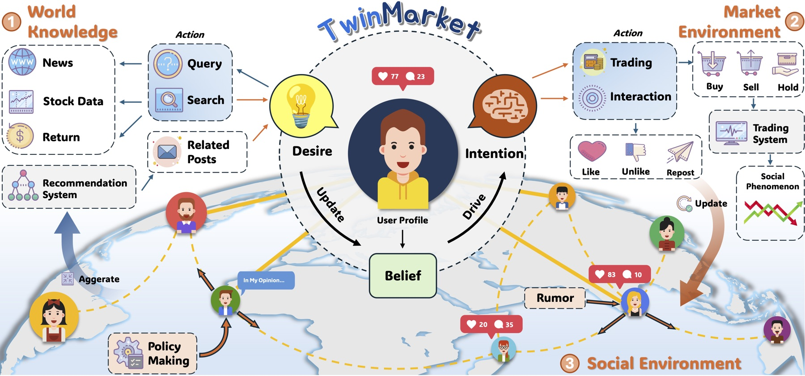

每位投资者按信念 → 愿望 → 意图推理，
再决定买入、卖出或持有。
由真实投资者数据构建风格、持仓，
以及处置效应等行为偏差。
Agent 在论坛发帖、转发与点赞，
观点和谣言沿关系网络扩散。
买卖委托撮合成交形成每日价格，
复现厚尾、波动聚集等典型事实。
用大语言模型驱动上千名具有真实画像、认知偏差与社交关系的投资者，从个体决策中涌现出泡沫、崩盘与市场典型事实。
微观层模拟每位投资者的决策，宏观层模拟订单撮合与社交信息传播，两层都以真实行为数据、行情与新闻为依据。
在 TwinMarket 之上加一层本地研究工作台：浏览器里配置与观察，后台进程独立运行，每次实验完整留档、可复现。
搜索、按状态筛选，在列表与卡片之间切换；已有实验可一键复制。
选择 Agent 规模、模拟区间与市场模板，系统先校验数据覆盖，再提交运行。
每个交易日依次经过环境准备、Agent 决策、市场撮合、社交互动与提交，进度实时可见。
运行状态、慢阶段与错误集中呈现，可停止、重试或从断点续跑。
初始化历史与模拟结果接成一条曲线，按行业指数切换查看。
成交额、委托失衡与处置效应，按投资者画像分组对比。
Agent 关系网络、意见领袖与转发链深度，逐日回看。
逐日拆解每个 Agent 的判断、仓位目标和实际交易。